עיר מיניאטורית, מגדל של 230 מיליון קופסאות, PS3 עד PS5 ונגן יוטיוב. אין פה מצלמה ואין תוכנת עריכה: Claude כתב קוד שבונה את העולם ב-Blender, ועוד קוד שמוסיף את המספרים מעל. הנה בדיוק איך, עם כל הפרומפטים מוכנים להעתקה.
שלושה כלים עושים את כל העבודה: Claude כותב את הקוד, Blender מרנדר את התלת-ממד, ו-HyperFrames מוסיף מעל את המונים והטקסט. הקול נוצר בקולבו.
Claude Code (מנוי Claude), Blender (חינם), Node.js בשביל HyperFrames, ffmpeg. ואת הקול יוצרים בקולבו, עם ההנחה שלי:
הקודים עובדים ברכישה הראשונה של מנוי חודשי. נרשמים דרך הקישור שלי, מאשרים עוגיות באתר של קולבו ומזינים את הקוד בתשלום.
230 מיליון על מסך שחור לא אומר כלום. מגדל של קופסאות שעולה עד השמיים כן. לכל נתון בתסריט יש חפץ אחד שמראה אותו.
עטיפת המקור של המשחק, ה-PS5 בצורה האמיתית שלו, התמונה האמיתית של הטריילר, הממשק האמיתי של אינסטגרם. כל דבר גנרי נראה זול ומאבד את הצופה.
בכל שוט משהו זז: המצלמה נכנסת, הקופסה קופצת, השטרות נופלים. ואף טקסט לא נשאר על המסך בלי תנועה יותר משתי שניות.
הכל מתחיל מהמספרים. מבקשים מ-Claude לחקור, לבדוק כל נתון מול מקור רשמי, ולכתוב משפט אחד לכל סצנה. ליד כל משפט הוא כותב מה רואים, כי בריל הזה כל מספר הוא חפץ.
אני בונה ריל של 50 שניות בעברית: "13 שנים של GTA במספרים", לקראת היציאה של GTA 6 ב-19.11.2026. 1. תמצא לי 8-10 נתונים מפתיעים על GTA 5 ועל הטריילרים של GTA 6, ולכל נתון מקור רשמי (Take-Two, Rockstar, Guinness, PEGI). נתון בלי מקור לא נכנס. 2. תכתוב תסריט קריינות: משפט אחד לכל סצנה, עברית מדוברת, בלי סימני קריאה. ההוק בשנייה הראשונה, וסיום עם "תגיבו קוד". 3. ליד כל משפט תכתוב מה רואים על המסך: חפץ פיזי אחד שמראה את המספר (מגדל של קופסאות, ערימת זהב, לוח שנה), ולא מספר שעומד לבד. 4. תסמן מילים בעברית שאפשר לקרוא בשתי דרכים, ותוסיף להן ניקוד.
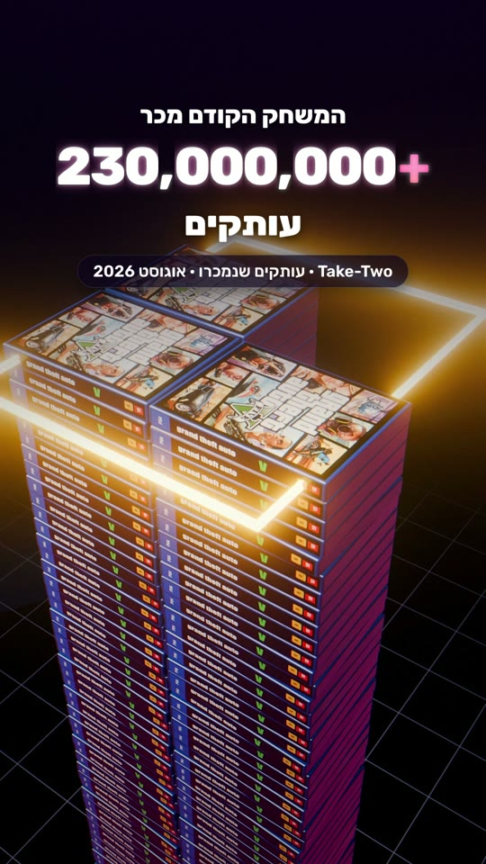
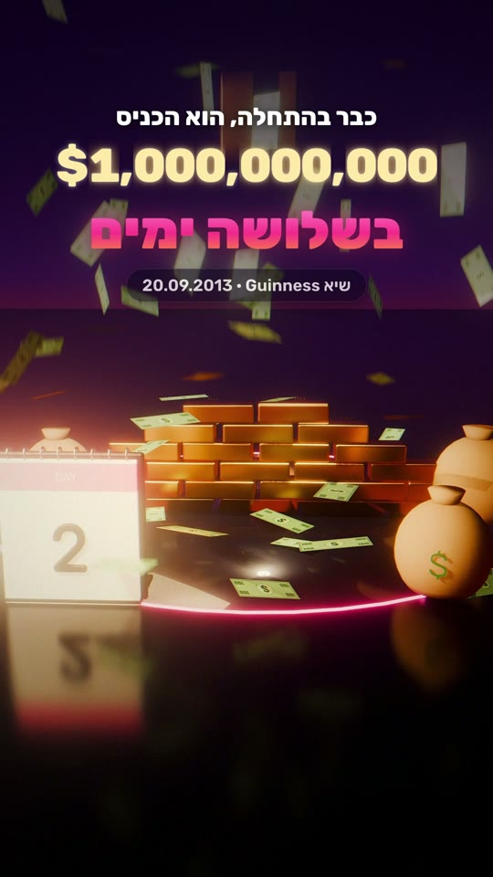
Blender הוא תוכנת תלת-ממד חינמית. לא צריך לדעת להשתמש בה: Claude כותב סקריפט Python שבונה את כל העיר, הבניינים, הדקלים, המכוניות והאנשים, ומרנדר אותה מהטרמינל. שוט של 5 שניות מתרנדר אצלי בפחות מ-4 דקות.
תכתוב לי סקריפט Python ל-Blender (גרסה 5, מנוע Eevee) שבונה עיר מיניאטורית בסגנון Vice City, כמו דיורמה על שולחן: - משטח עם ים, חול, טיילת, כביש עם פסים ומדרכה. מסביב לבסיס פס ניאון ורוד. - 7 בנייני ארט-דקו בצבעי פסטל (ורוד, מנטה, לבנדר, אפרסק), עם חלונות מוארים, מדפים מעל כל קומה, כתר מדורג ופסי ניאון. בניין אחד עגול. - דקלים עם גזע מעוקל ועלים, שמשיות מפוספסות, מגדל מציל, פנסי רחוב. - 5 מכוניות שנוסעות על הכביש ואנשים קטנים שהולכים על הטיילת. - שמיים של שקיעה עם עננים בתוך ה-World shader, כדי שהים והכביש הרטוב ישקפו אותם. - מצלמה 9:16 (1080x1920) שיורדת ונכנסת פנימה במשך 5 שניות, עם עומק שדה של מיניאטורה וטשטוש תנועה. - Bloom בקומפוזיטור ו-AgX. שהסקריפט ירוץ מהטרמינל: blender -b -P city.py -- anim shots/city
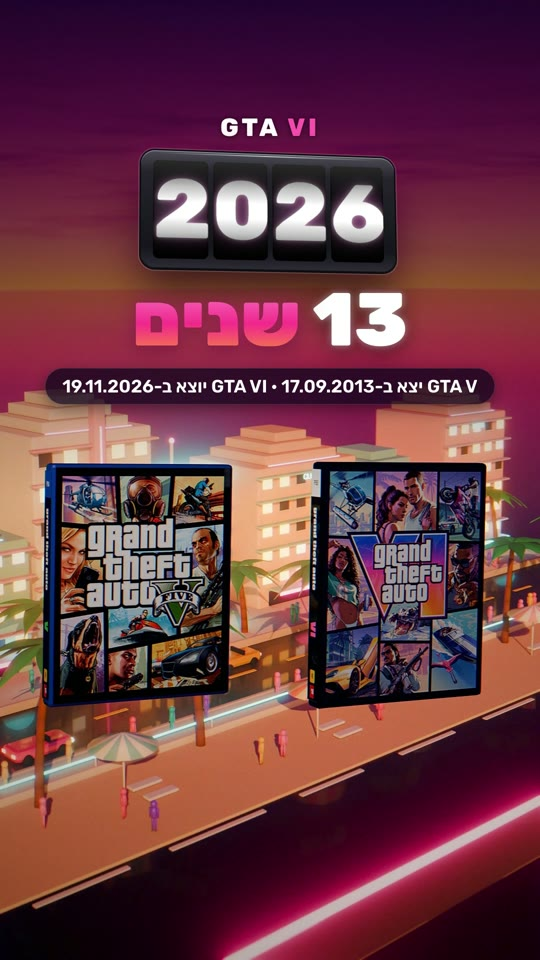
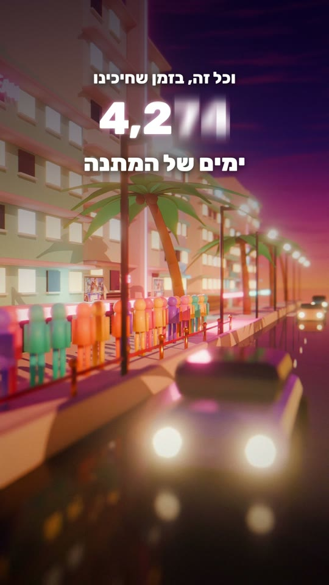
מספר לבד על מסך לא מחזיק אף אחד. כל נתון מקבל חפץ שאפשר לראות: מגדל, זהב, קונסולות, נגן יוטיוב. וחשוב: חפצים אמיתיים. עטיפת המקור של המשחק, השדרה של קופסת PS4, תמונת הטריילר האמיתית. משהו גנרי נראה מיד זול.
באותו סגנון, תוסיף סקריפט props.py עם שוט נפרד לכל מספר בתסריט, באולפן סגול כהה עם רצפה מבריקה: 1. מגדל של קופסאות GTA V שנערם מלמטה למעלה. קופסת PS4 כחולה, שדרה מודפסת ועטיפה אמיתית למעלה (אני מצרף את קובץ העטיפה). 2. ערימת מטילי זהב, שקי כסף עם $, גשם של שטרות ולוח שנה שנתלש: יום 1, 2, 3. 3. PS3, PS4 ו-PS5 בפרופורציות האמיתיות שלהם. קופסת המשחק קופצת מאחד לשני ומשאירה שובל אור. 4. נגן יוטיוב עם התמונה של הטריילר (אני מצרף), שמתחלף לטריילר השני. 5. תינוק בעריסה ליד קופסת GTA V, ואחר כך ילד בכיפה וטלית ליד ספר תורה, עם סוכריות שנזרקות ומדבקת 18 שנוחתת מלפנים. לכל שוט: אורך בשניות לפי התזמון של הקריינות, מצלמה שזזה כל הזמן, ופקודה אחת שמרנדרת אותו.
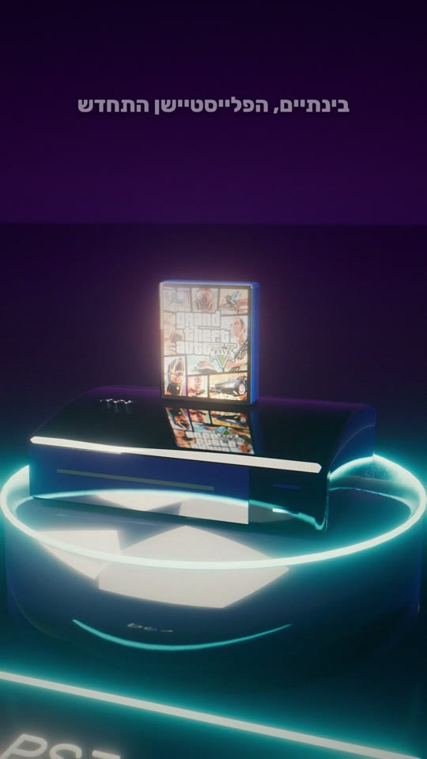
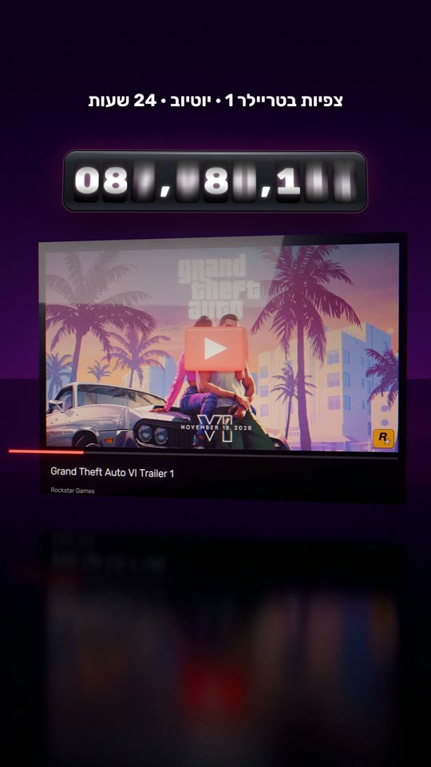
הקריינות רגועה ושטוחה, כמו מישהו שמספר. הקול נוצר ב-AI, ואת זה עושים בקולבו. בעברית יש מילים שאפשר לקרוא בשתי דרכים, וה-AI בוחר לבד. אצלי "לחדש" יצא "לחַדֵּש" במקום "לחָדָש". הפתרון: לכתוב את המילה בניקוד בטקסט שנותנים לקול. אחר כך מעבירים את הקובץ ב-Whisper כדי לקבל זמן מדויק לכל מילה.
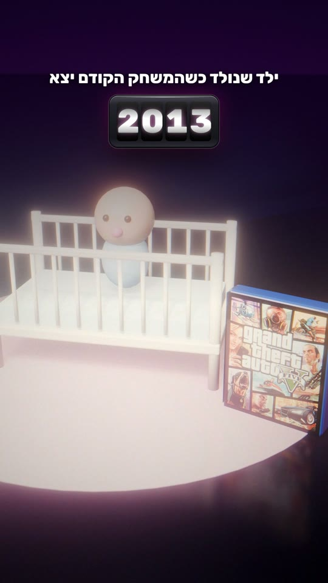
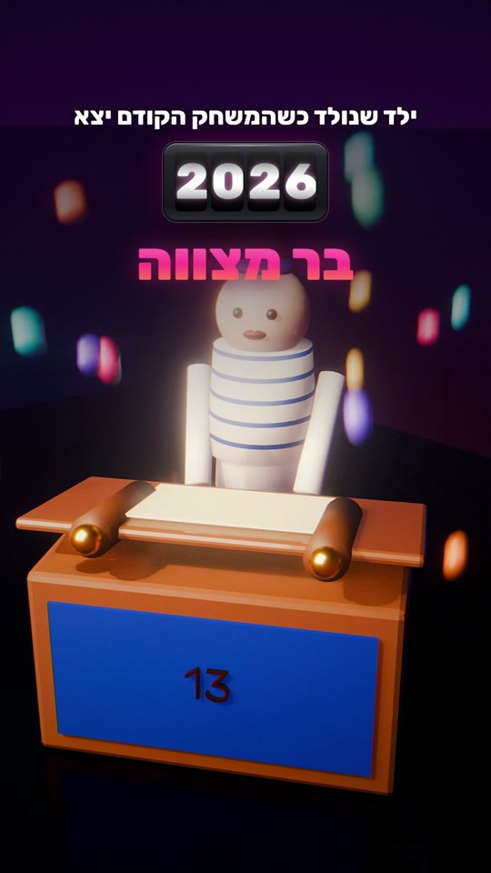
HyperFrames בונה וידאו מ-HTML. Claude כותב בו את כל מה שעל המסך: המונים המתגלגלים, הכותרות, שורות המקור והסוף עם התגובה באינסטגרם. כל טקסט נכנס בדיוק על המילה שנאמרת.
תבנה לי ב-HyperFrames שכבת טקסט מעל הווידאו (plate.mp4) ומעל הקריינות (vo.mp3): - מונה מכני: תופים של 0-9 שמתגלגלים, עם טשטוש תנועה אנכי לפי המהירות, ונשיאה אמיתית בין הספרות (כשהיחידות עוברות מ-9 ל-0, העשרות זזות). נחיתה עם קפיצה קטנה, הבזק וקליק. - כותרות בעברית בגופן Rubik: מספר לבן גדול, מילה אחת בגרדיאנט ורוד-כתום. - מתחת לכל נתון כמוסה כהה עם המקור (Take-Two, Guinness, Rockstar). - הכל בתוך האזור הבטוח של אינסטגרם: בלי טקסט ב-250 הפיקסלים העליונים, ב-420 התחתונים, ו-150 מכל צד. - כל טקסט נכנס בדיוק על המילה שנאמרת. הנה התזמון של כל מילה: [הדבקת הפלט של Whisper] - בסוף: ממשק תגובות של אינסטגרם במצב כהה. מקלידים "קוד", לוחצים Post, התגובה נכנסת והלב מתמלא באדום.
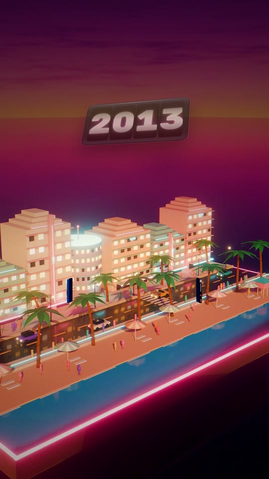
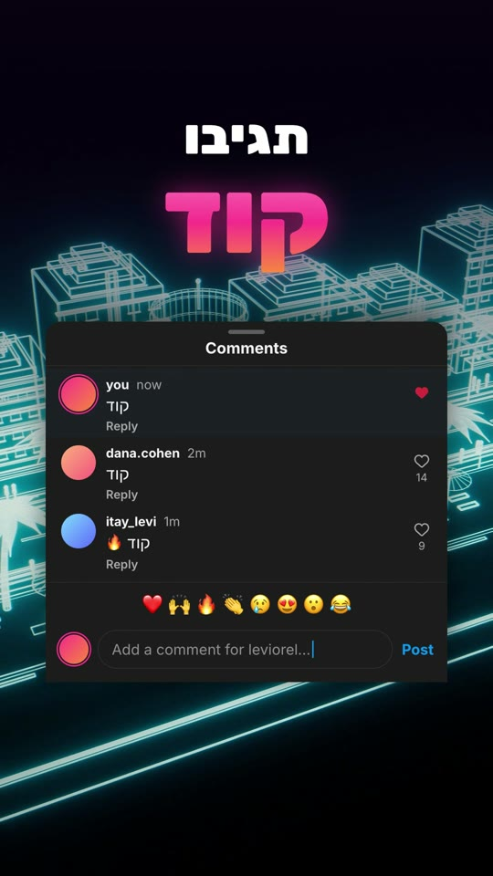
שלוש פקודות סוגרות את הכל: צבע וגרעין לכל שוט, חיבור לקובץ אחד, רינדור השכבה ואיזון עוצמה לתקן של אינסטגרם (-14 LUFS). את הפקודות האלה Claude מריץ לבד, אתם רק מאשרים.
# צבע, חדות וגרעין לכל שוט, ואז חיבור הכל לקובץ אחד ffmpeg -framerate 30 -i shots/city/f_%04d.png -vf "curves=r='0/0 0.25/0.22 0.75/0.80 1/1',eq=saturation=1.14:contrast=1.03,vignette=angle=PI/7,unsharp=5:5:0.55,noise=alls=4:allf=t,format=yuv420p" -c:v libx264 -crf 14 seg00.mp4 ffmpeg -f concat -safe 0 -i list.txt -c copy plate.mp4 # רינדור השכבה של HyperFrames מעל ה-plate והקריינות npx hyperframes render . -o raw.mp4 -f 30 -q high # עוצמת סאונד לתקן של אינסטגרם ffmpeg -i raw.mp4 -af loudnorm=I=-14:TP=-1.5:LRA=11 -c:v copy final.mp4
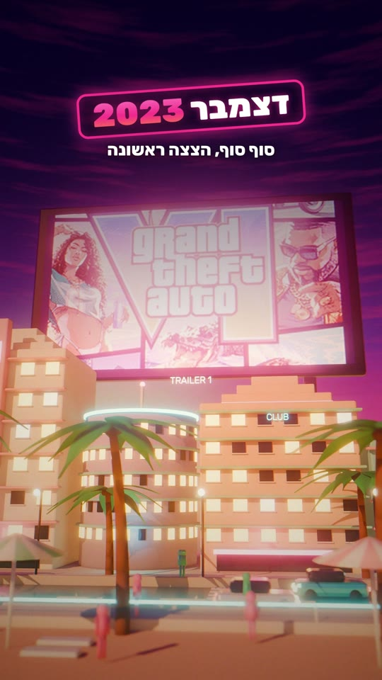
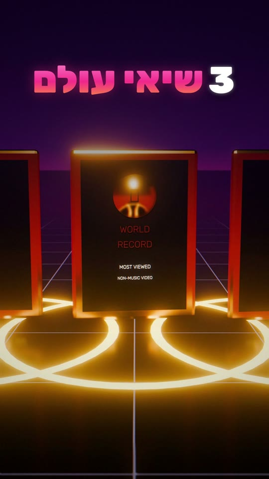
מה נשבר: עשיתי קודם גרפיקה דו-ממדית עם מספרים על רקע ניאון. זה נראה כמו מצגת.
מה תיקן: עולם תלת-ממד אמיתי ב-Blender, וחפץ לכל מספר.
מה נשבר: קופסה שחורה עם V ירוק שציירתי לבד. אף אחד לא זיהה שזה GTA.
מה תיקן: עטיפת המקור, קופסת PS4 כחולה ושדרה מודפסת. עכשיו מזהים בשנייה.
מה נשבר: ה-AI הקריא "לחדש" כמו "לחַדֵּש".
מה תיקן: ניקוד על המילה בטקסט של הקול, ובדיקה של המילה לפני שמחברים.
GTA 6 יוצא ב-19 בנובמבר. את הקול לסרטון שלכם יוצרים בקולבו: נרשמים דרך הקישור שלי ולוקחים את ההנחה לחודש הראשון.
להתחיל בקולבועשיתם אחד? תתייגו את @leviorel ואת @kolbo.ai, אני רוצה לראות.